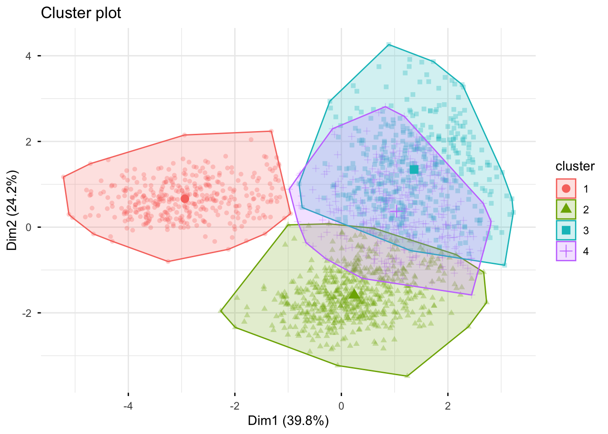
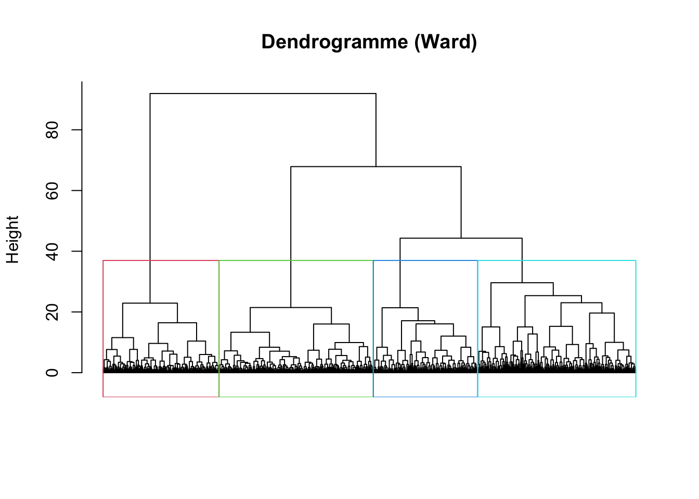
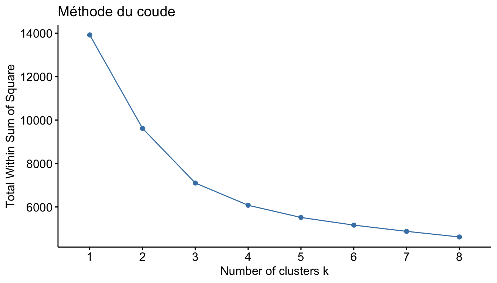
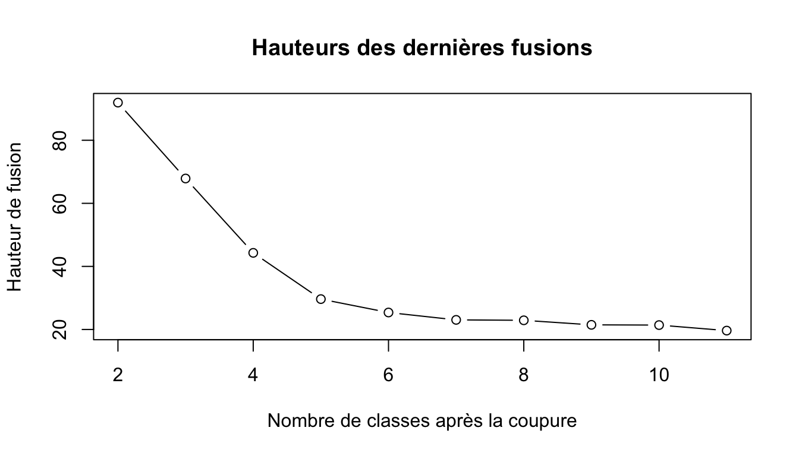
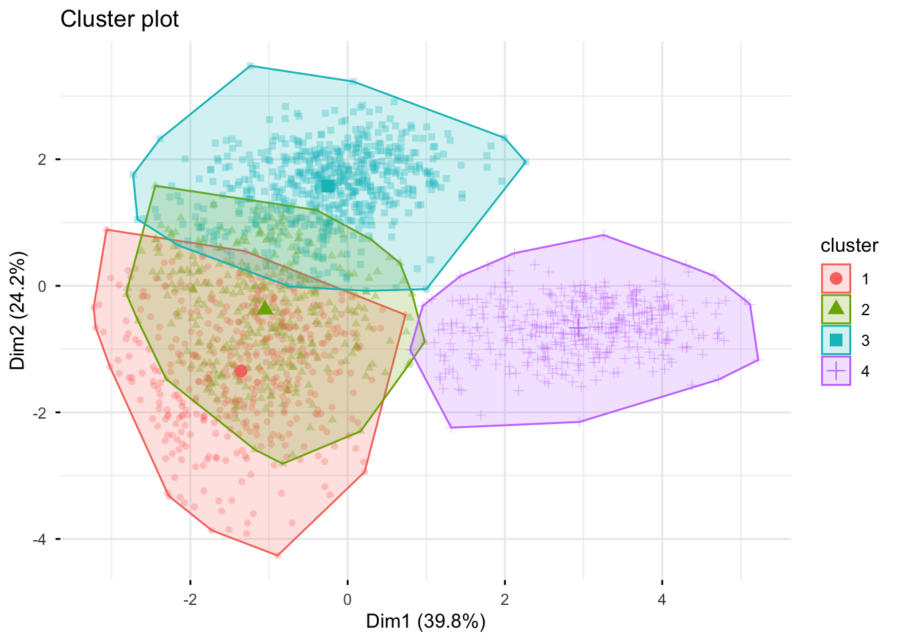
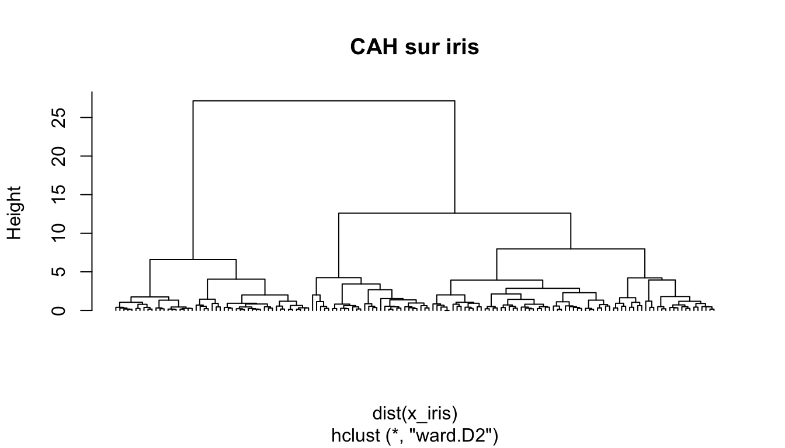

Chapitre 6 Classification automatique, éthique et R Shiny
Objectifs du chapitre
- Distinguer apprentissage supervisé et non supervisé.
- Segmenter des clients avec les k-moyennes et la classification ascendante hiérarchique (CAH).
- Choisir un nombre de classes, décrire et nommer les classes obtenues.
- Identifier les enjeux éthiques et légaux d’un projet de science des données, en particulier en marketing.
- Comprendre la structure d’une application web R Shiny.
library(tidyverse)
library(FactoMineR)
library(factoextra)
library(cluster) # silhouette
source("R/boutique.R")6.1 Classification non supervisée
6.1.1 Supervisé ou non supervisé ?
- Supervisé (chapitres 4 et 5) : on connaît la variable à prédire (la marque achetée) et on apprend à la prédire.
- Non supervisé : il n’y a pas de variable cible. On cherche une structure dans les données. La classification automatique (clustering) forme des groupes d’individus tels que les individus d’un même groupe se ressemblent et que les groupes soient différents entre eux.
En marketing, c’est la segmentation de clientèle : regrouper les clients selon leurs comportements pour adapter les offres, les messages et les canaux à chaque segment. Attention au vocabulaire : en français, « classification » désigne souvent ce regroupement non supervisé, alors qu’en anglais classification désigne la prédiction supervisée d’une classe.
6.1.2 Distances et standardisation
Regrouper des individus « qui se ressemblent » suppose de mesurer leur distance. La plus utilisée est la distance euclidienne :
\[d(x_i, x_{i'}) = \sqrt{\sum_{j=1}^p (x_{ij} - x_{i'j})^2}\]
Avec la distance euclidienne, une variable de grande variance (un montant en
euros, de 16 à 1 800) écrase une variable de petite variance (une part de
commandes en promotion, entre 0 et 1). Il faut presque toujours
centrer-réduire les variables avant de calculer des distances : scale().
6.1.3 Les données : les clients de la boutique
On reprend les indicateurs de comportement des clients actifs en 2025 (chapitres 3 et 5) :
indicateurs <- indicateurs_clients(lire_boutique("commandes"), lire_boutique("clients"))
variables <- c("recence", "frequence", "montant_total", "panier_moyen",
"part_promo", "nb_categories", "articles_par_commande", "anciennete")
x <- scale(indicateurs[, variables]) # centrer-réduire
rownames(x) <- indicateurs$client_id
dim(x)#> [1] 1741 8Les données ont été simulées avec quatre segments de clients « cachés ». Nous allons voir si les méthodes de classification les retrouvent, et ce qu’elles nous disent pour les nommer.
6.2 Les k-moyennes (k-means)
6.2.1 Algorithme
On fixe le nombre de classes \(k\) à l’avance.
- Choisir \(k\) centres initiaux au hasard.
- Affecter chaque individu au centre le plus proche.
- Recalculer chaque centre comme la moyenne des individus de sa classe.
- Répéter les étapes 2 et 3 jusqu’à ce que les affectations ne changent plus.
L’algorithme diminue à chaque étape l’inertie intra-classe (somme des
carrés des distances des individus au centre de leur classe). Il converge vers
un minimum local qui dépend des centres initiaux : on le lance plusieurs
fois (argument nstart) et on garde la meilleure solution.
6.2.2 Décomposition de l’inertie
\[\underbrace{I_{\text{totale}}}_{\text{totss}} = \underbrace{I_{\text{intra}}}_{\text{tot.withinss}} + \underbrace{I_{\text{inter}}}_{\text{betweenss}}\]
Une bonne partition a une inertie intra-classe faible (classes homogènes) et une inertie inter-classe forte (classes bien séparées). Le rapport \(I_{\text{inter}} / I_{\text{totale}}\) (un « \(R^2\) » de la partition) mesure la part de l’information conservée par la partition.
#> [1] 370 596 423 352#> recence frequence montant_total panier_moyen part_promo nb_categories
#> 1 -0.60 1.42 1.75 1.27 -0.77 1.10
#> 2 -0.39 0.16 -0.33 -0.82 0.86 0.32
#> 3 1.31 -0.88 -0.60 0.24 -0.45 -0.90
#> 4 -0.29 -0.71 -0.56 -0.22 -0.10 -0.62
#> articles_par_commande anciennete
#> 1 -0.45 0.26
#> 2 0.87 0.28
#> 3 -0.46 0.40
#> 4 -0.45 -1.23#> [1] 0.5633
fviz_cluster() représente les classes sur le premier plan d’une ACP : c’est
une façon naturelle de visualiser une partition en plus de deux dimensions.
6.3 Classification ascendante hiérarchique (CAH)
6.3.1 Algorithme
- Au départ, chaque individu forme une classe.
- On fusionne les deux classes les plus proches.
- On recommence jusqu’à n’avoir plus qu’une seule classe.
On obtient une hiérarchie de partitions emboîtées, représentée par un dendrogramme. Il n’est pas nécessaire de fixer \(k\) à l’avance : on « coupe » l’arbre après coup.
La distance entre deux classes (critère d’agrégation) se définit de plusieurs façons :
| Critère | Distance entre classes | Effet |
|---|---|---|
lien simple (single) |
plus petite distance entre deux individus | classes allongées, effet de chaîne |
lien complet (complete) |
plus grande distance | classes compactes |
lien moyen (average) |
distance moyenne | compromis |
Ward (ward.D2) |
augmentation de l’inertie intra-classe due à la fusion | classes compactes, de tailles proches ; le plus utilisé |
Le critère de Ward est cohérent avec les k-moyennes : tous deux minimisent l’inertie intra-classe.
distances <- dist(x, method = "euclidean")
cah <- hclust(distances, method = "ward.D2")
plot(cah, labels = FALSE, hang = -1, main = "Dendrogramme (Ward)", xlab = "", sub = "")
rect.hclust(cah, k = 4, border = 2:5)
Lecture : la hauteur d’une fusion mesure la perte d’homogénéité qu’elle provoque. Un grand saut de hauteur indique qu’on fusionne des classes très différentes : c’est un bon endroit pour couper. Avec 1 741 clients, les feuilles sont illisibles ; seule la partie haute de l’arbre compte.
#> classes_cah
#> 1 2 3 4
#> 379 504 517 341#> kmeans
#> cah 1 2 3 4
#> 1 368 2 2 7
#> 2 0 500 0 4
#> 3 2 49 407 59
#> 4 0 45 14 282Les numéros de classes sont arbitraires ; ce qui compte est de savoir si les mêmes individus sont regroupés ensemble. Les deux méthodes donnent ici des partitions proches : c’est un premier signe de stabilité.
6.3.2 k-moyennes ou CAH ?
| k-moyennes | CAH | |
|---|---|---|
| Nombre de classes | fixé à l’avance | choisi après coup, sur le dendrogramme |
| Taille des données | grandes tailles possibles (millions de clients) | coûteuse au-delà de quelques dizaines de milliers d’individus (matrice des distances) |
| Résultat | dépend de l’initialisation | déterministe |
| Usage combiné | consolider une CAH | choisir \(k\) et initialiser les k-moyennes |
6.4 Choisir le nombre de classes
Aucun critère n’est parfait : on en combine plusieurs, puis on vérifie que les classes sont interprétables et utiles pour la question posée. Une équipe marketing peut gérer quatre ou cinq segments, rarement quinze.
6.4.1 Méthode du coude
On trace l’inertie intra-classe en fonction de \(k\). Elle diminue toujours ; on cherche le \(k\) à partir duquel le gain devient faible.

6.4.2 Indice de silhouette
Pour chaque individu \(i\), on compare \(a(i)\), sa distance moyenne aux individus de sa classe, à \(b(i)\), sa distance moyenne aux individus de la classe voisine la plus proche :
\[s(i) = \frac{b(i) - a(i)}{\max(a(i), b(i))} \in [-1, 1]\]
Une valeur proche de 1 : l’individu est bien classé ; proche de 0 : il est entre deux classes ; négative : il est probablement mal classé. On cherche un \(k\) qui donne une silhouette moyenne élevée.
silhouette_moyenne <- sapply(2:7, function(k) {
set.seed(1)
classes <- kmeans(x, centers = k, nstart = 25)$cluster
mean(silhouette(classes, distances)[, "sil_width"])
})
round(setNames(silhouette_moyenne, 2:7), 3)#> 2 3 4 5 6 7
#> 0.333 0.310 0.303 0.296 0.298 0.2506.4.3 Le saut d’inertie du dendrogramme
hauteurs <- sort(cah$height, decreasing = TRUE)[1:10]
plot(1:10 + 1, hauteurs, type = "b", xlab = "Nombre de classes après la coupure",
ylab = "Hauteur de fusion", main = "Hauteurs des dernières fusions")
On coupe juste avant un grand saut de hauteur.
Bilan. Les critères ne sont pas d’accord : la silhouette moyenne est un peu plus élevée pour \(k = 2\), mais les écarts entre \(k = 2, 3, 4\) sont faibles ; le coude et les hauteurs du dendrogramme suggèrent 3 ou 4 classes. Une partition en deux classes (« bons clients » / « autres ») serait trop grossière pour adapter les actions marketing. On retient \(k = 4\), à condition que les classes soient interprétables, ce que l’on vérifie maintenant.
6.5 Décrire les classes
Une classification n’est utile que si l’on sait décrire et nommer ses classes.
6.5.1 Moyennes par classe
profils <- indicateurs |>
mutate(classe = factor(km$cluster)) |>
group_by(classe) |>
summarise(effectif = n(),
across(all_of(variables), \(v) round(mean(v), 2)))
profils#> # A tibble: 4 × 10
#> classe effectif recence frequence montant_total panier_moyen part_promo
#> <fct> <int> <dbl> <dbl> <dbl> <dbl> <dbl>
#> 1 1 370 16.6 11.3 1034. 91.8 0.15
#> 2 2 596 35.5 6.13 224. 36.8 0.74
#> 3 3 423 182. 1.83 118. 64.8 0.26
#> 4 4 352 43.6 2.53 135. 52.6 0.39
#> # ℹ 3 more variables: nb_categories <dbl>, articles_par_commande <dbl>,
#> # anciennete <dbl>On compare chaque classe à la moyenne générale pour la nommer. Par exemple :
| Profil observé | Nom proposé | Action possible |
|---|---|---|
| commandes très fréquentes, gros montants, peu de promotions | Fidèles premium | programme de fidélité, avant-premières |
| beaucoup d’articles, petits paniers, forte part de promotions | Chasseurs de promos | ventes privées, mais attention à la marge |
| dernière commande lointaine, une ou deux commandes | Occasionnels endormis | campagne de réactivation |
| inscrits récemment, quelques commandes | Nouveaux clients | parcours d’accueil, deuxième commande |
(Les numéros de classes dépendent de l’initialisation : associez chaque nom au bon numéro en lisant le tableau des profils.)
Les variables qui n’ont pas servi à construire les classes aident aussi à les décrire, comme les variables illustratives d’une ACP :
indicateurs |>
mutate(classe = factor(km$cluster)) |>
group_by(classe) |>
summarise(age_moyen = round(mean(age, na.rm = TRUE)),
part_newsletter = round(mean(newsletter == "Oui"), 2),
canal_principal = names(which.max(table(canal_acquisition))))#> # A tibble: 4 × 4
#> classe age_moyen part_newsletter canal_principal
#> <fct> <dbl> <dbl> <chr>
#> 1 1 46 0.69 Direct
#> 2 2 32 0.57 Réseaux sociaux
#> 3 3 41 0.31 Moteur de recherche
#> 4 4 33 0.38 Réseaux sociaux6.5.2 Les classes retrouvent-elles la structure simulée ?
Les données étant simulées, on connaît les vrais segments : lors de la
simulation, ils ont été tirés au hasard juste après set.seed(2026), avec les
proportions ci-dessous. On peut donc les reconstituer et les comparer aux
classes obtenues.
set.seed(2026)
segment_simule <- sample(c("Fidèles", "Chasseurs de promos", "Occasionnels", "Nouveaux"),
2000, replace = TRUE, prob = c(0.20, 0.30, 0.35, 0.15))
verite <- tibble(client_id = sprintf("C%04d", 1:2000), segment_simule)
indicateurs |>
mutate(classe = km$cluster) |>
left_join(verite, by = "client_id") |>
count(classe, segment_simule) |>
pivot_wider(names_from = segment_simule, values_from = n, values_fill = 0)#> # A tibble: 4 × 5
#> classe Fidèles Occasionnels `Chasseurs de promos` Nouveaux
#> <int> <int> <int> <int> <int>
#> 1 1 369 1 0 0
#> 2 2 2 33 561 0
#> 3 3 4 402 15 2
#> 4 4 8 106 23 215Chaque classe correspond majoritairement à un segment simulé. Les erreurs se concentrent entre « Occasionnels » et « Nouveaux », qui ont peu de commandes dans les deux cas. Sur des données réelles, on ne connaît jamais cette vérité : c’est pourquoi on vérifie la stabilité et l’interprétabilité des classes.
6.5.3 ACP puis CAH : la fonction HCPC()
FactoMineR enchaîne naturellement une ACP, une CAH (Ward) sur les
coordonnées factorielles, puis une consolidation par k-moyennes. Elle propose
un nombre de classes (selon le saut d’inertie) et décrit automatiquement
les classes.
acp <- PCA(as.data.frame(indicateurs[, variables]), graph = FALSE)
res_hcpc <- HCPC(acp, nb.clust = -1, graph = FALSE) # -1 : coupure automatique
table(res_hcpc$data.clust$clust)#>
#> 1 2 3
#> 718 652 371La coupure automatique propose ici trois classes : elle fusionne les nouveaux clients et les occasionnels. Rien n’empêche d’imposer le nombre de classes retenu pour des raisons métier :
res_hcpc <- HCPC(acp, nb.clust = 4, graph = FALSE)
fviz_cluster(res_hcpc, geom = "point", alpha = 0.3, ggtheme = theme_minimal())
#> v.test Mean in category Overall mean sd in category
#> recence 30.830 181.1247 68.7898 98.3288
#> anciennete 9.460 3.2304 2.6916 1.1062
#> panier_moyen 6.003 65.1346 58.4648 24.2732
#> part_promo -10.671 0.2625 0.4254 0.3557
#> articles_par_commande -10.916 1.9645 2.3432 0.7968
#> montant_total -14.208 118.8460 352.5338 70.2266
#> frequence -20.791 1.8353 5.4612 0.9107
#> nb_categories -21.400 1.6118 2.7501 0.6910
#> Overall sd p.value
#> recence 86.3748 1.049e-208
#> anciennete 1.3501 3.092e-21
#> panier_moyen 26.3397 1.942e-09
#> part_promo 0.3619 1.388e-26
#> articles_par_commande 0.8224 9.680e-28
#> montant_total 389.8943 8.182e-46
#> frequence 4.1342 5.256e-96
#> nb_categories 1.2610 1.328e-101Pour chaque classe, la sortie compare la moyenne de la classe
(Mean in category) à la moyenne générale (Overall mean) et teste l’écart
(v.test : au-delà de 2 en valeur absolue, l’écart est significatif). La
fonction catdes() fait la même chose pour n’importe quelle variable
qualitative. res_hcpc$desc.ind$para donne les parangons : les clients les
plus proches du centre de chaque classe, utiles pour présenter chaque segment
par un exemple concret (un « persona »).
Démarche d’une segmentation
- Choisir les variables (comportement d’achat, pas de variables sensibles) et les standardiser.
- Choisir une distance (euclidienne en général).
- CAH (Ward) pour explorer et choisir \(k\) ; k-moyennes pour consolider.
- Choisir \(k\) : coude, silhouette, saut d’inertie, interprétabilité et utilité métier.
- Décrire chaque classe (moyennes,
catdes(), parangons) et la nommer. - Vérifier la stabilité : obtient-on les mêmes classes avec une autre graine, un autre sous-échantillon, une autre méthode ?
6.6 L’éthique dans la science des données
Les données décrivent souvent des personnes. Les décisions prises à partir de modèles (crédit, recrutement, prix, publicité, santé, justice) ont des conséquences réelles sur leur vie. Un modèle techniquement excellent peut être inacceptable.
6.6.1 Quelques cas marquants
- COMPAS (États-Unis, 2016) : un logiciel d’évaluation du risque de récidive utilisé par des tribunaux. Une enquête de ProPublica a montré que les prévenus noirs non récidivistes étaient presque deux fois plus souvent classés « à haut risque » que les prévenus blancs non récidivistes. Le débat qui a suivi a montré que plusieurs définitions mathématiques de l’équité ne peuvent pas être satisfaites en même temps.
- Outil de recrutement d’Amazon (abandonné en 2018) : entraîné sur dix ans de CV majoritairement masculins, il pénalisait les CV contenant le mot « women’s ». Les données historiques reproduisaient une discrimination passée.
- Cambridge Analytica (2018) : les données de dizaines de millions de profils Facebook ont été collectées sans consentement éclairé et utilisées pour du ciblage politique. Cet exemple concerne directement le marketing numérique.
6.6.2 Enjeux propres au marketing
- Ciblage et discrimination : une segmentation fondée sur le code postal peut servir d’indicateur indirect (proxy) de l’origine ou du revenu, et exclure certains quartiers d’une offre ou d’une publicité.
- Prix personnalisés : faire payer plus cher les clients jugés « peu sensibles au prix » pose des questions de loyauté envers le consommateur.
- Exploitation des vulnérabilités : cibler des personnes endettées avec des offres de crédit, ou des joueurs compulsifs avec des paris.
- Interfaces trompeuses (dark patterns) : rendre le refus des cookies ou la résiliation d’un abonnement délibérément difficiles.
- Données sensibles : santé, opinions, orientation sexuelle… peuvent être inférées à partir d’achats apparemment anodins ; le RGPD encadre très strictement leur traitement.
6.6.3 Sources de problèmes éthiques
| Étape | Risque |
|---|---|
| Formulation | la question elle-même est discriminatoire ou intrusive |
| Collecte | absence de consentement ; données non représentatives (biais de sélection) |
| Préparation | variables qui servent de proxy à un attribut protégé (code postal \(\leftrightarrow\) origine) |
| Modélisation | modèle qui reproduit ou amplifie les biais historiques ; opacité |
| Évaluation | performance mesurée globalement mais très inégale selon les groupes |
| Communication | résultats présentés comme plus certains qu’ils ne le sont |
| Déploiement | boucle de rétroaction : les décisions du modèle modifient les données futures |
6.6.4 Le cadre légal en Europe
- Le RGPD (Règlement général sur la protection des données, 2018) s’applique à toute donnée permettant d’identifier une personne, directement ou indirectement. Principes clés : base légale du traitement (dont le consentement), limitation des finalités, minimisation des données, durée de conservation limitée, droits d’accès, de rectification et d’effacement, encadrement des décisions entièrement automatisées. Toute personne peut s’opposer à tout moment à l’utilisation de ses données à des fins de prospection commerciale, y compris au profilage lié à cette prospection. En France, la CNIL veille à son application ; elle a notamment sanctionné à plusieurs reprises des entreprises pour le dépôt de cookies publicitaires sans consentement valable.
- L’AI Act européen (règlement sur l’intelligence artificielle, adopté en 2024 et appliqué progressivement) classe les systèmes d’IA par niveau de risque et impose des obligations renforcées aux systèmes « à haut risque » (recrutement, crédit, éducation…). Il interdit certaines pratiques, comme les techniques de manipulation qui exploitent les vulnérabilités des personnes.
Pseudonymiser n’est pas anonymiser. Remplacer un nom par un identifiant
(comme C0042 dans la boutique) laisse les données personnelles : en croisant
âge, code postal et historique d’achats, on peut souvent réidentifier une
personne. Des données pseudonymisées restent soumises au RGPD.
6.6.5 Questions à se poser dans tout projet
- Ai-je le droit d’utiliser ces données pour cette finalité ? Les clients ont-ils été informés ?
- Ai-je besoin de toutes ces variables (minimisation) ?
- Mes données représentent-elles toutes les populations concernées par la décision ?
- Mon modèle a-t-il des performances comparables selon les groupes (sexe, âge, origine…) ?
- Puis-je expliquer une décision à la personne concernée ?
- Qui est responsable si le modèle se trompe ? Une personne peut-elle contester la décision ?
Le cadre PCS du chapitre 1 y contribue : un résultat instable ou non prédictible ne devrait pas servir à prendre des décisions sur des personnes.
6.7 Interfaces graphiques avec R Shiny
6.7.1 Qu’est-ce que Shiny ?
Shiny est un package R qui permet de créer des applications web interactives sans écrire de HTML ni de JavaScript : tableaux de bord, outils d’exploration de données, démonstrations de modèles. L’utilisateur modifie des paramètres (curseurs, menus) et les résultats se mettent à jour automatiquement. C’est un moyen efficace de mettre une analyse entre les mains d’une équipe marketing, sans qu’elle ait à écrire de code.
6.7.2 Structure d’une application
Une application Shiny comporte deux parties :
- l’interface (
ui) : la mise en page, les entrées (inputs) et l’emplacement des sorties (outputs) ; - le serveur (
server) : une fonction qui calcule les sorties à partir des entrées.
Entrées (ui) |
Sorties (ui) |
Rendu (server) |
|---|---|---|
sliderInput() |
plotOutput() |
renderPlot() |
selectInput() |
tableOutput() |
renderTable() |
numericInput() |
textOutput() |
renderText() |
checkboxInput() |
verbatimTextOutput() |
renderPrint() |
fileInput() |
DT::DTOutput() |
DT::renderDT() |
Chaque entrée a un identifiant (inputId) que le serveur lit avec
input$identifiant ; chaque sortie a un identifiant que le serveur remplit
avec output$identifiant <- render...().
6.7.3 Un exemple complet : explorer la segmentation des clients
Enregistrez le code suivant dans un fichier app.R placé dans le dossier
06-notes, puis cliquez sur Run App dans RStudio (ou exécutez
shiny::runApp("app.R")).
library(shiny)
library(tidyverse)
source("R/boutique.R")
indicateurs <- indicateurs_clients(lire_boutique("commandes"), lire_boutique("clients"))
variables <- c("recence", "frequence", "montant_total", "panier_moyen",
"part_promo", "nb_categories", "articles_par_commande", "anciennete")
ui <- fluidPage(
titlePanel("Segmentation des clients de la boutique"),
sidebarLayout(
sidebarPanel(
sliderInput("k", "Nombre de segments", min = 2, max = 8, value = 4),
checkboxGroupInput("vars", "Variables de segmentation", choices = variables,
selected = variables),
selectInput("var_x", "Abscisse", variables, selected = "frequence"),
selectInput("var_y", "Ordonnée", variables, selected = "part_promo")
),
mainPanel(
plotOutput("nuage"),
tableOutput("profils")
)
)
)
server <- function(input, output) {
# Expression réactive : recalculée seulement quand k ou les variables changent
segments <- reactive({
req(length(input$vars) >= 2)
set.seed(1)
kmeans(scale(indicateurs[, input$vars]), centers = input$k, nstart = 20)$cluster
})
output$nuage <- renderPlot({
ggplot(indicateurs, aes(.data[[input$var_x]], .data[[input$var_y]],
color = factor(segments()))) +
geom_point(alpha = 0.5) +
labs(color = "Segment") +
theme_minimal()
})
output$profils <- renderTable({
indicateurs |>
mutate(segment = segments()) |>
group_by(segment) |>
summarise(clients = n(), across(all_of(variables), mean))
})
}
shinyApp(ui = ui, server = server)6.7.4 La réactivité
Shiny recalcule une sortie seulement quand une entrée dont elle dépend
change. Une expression reactive() sert à calculer une seule fois un résultat
partagé par plusieurs sorties : ici, la segmentation est utilisée par le
graphique et par le tableau, mais n’est recalculée que lorsque k ou les
variables changent, pas lorsqu’on change d’axe sur le graphique. req()
interrompt le calcul tant qu’une condition n’est pas remplie (au moins deux
variables cochées).
6.7.5 Partager une application
- en local :
shiny::runApp(); - en ligne : shinyapps.io (offre gratuite limitée)
via le package
rsconnect, ou un serveur Shiny Server / Posit Connect de l’entreprise. Attention : publier une application qui contient des données clients revient à les diffuser.
Pour aller plus loin, la galerie shiny.posit.co/r/gallery et le livre Mastering Shiny de H. Wickham (mastering-shiny.org) présentent de nombreux exemples.
6.8 Résumé
- Classification non supervisée : former des groupes homogènes sans variable cible ; en marketing, c’est la segmentation ; standardiser avant de calculer des distances.
- k-moyennes :
kmeans(x, centers = k, nstart = 25); minimise l’inertie intra-classe ; dépend de l’initialisation. - CAH :
hclust(dist(x), method = "ward.D2"), dendrogramme,cutree(). - Choisir \(k\) : coude, silhouette, saut d’inertie, interprétabilité et utilité métier.
- Décrire les classes : moyennes par classe, variables illustratives,
HCPC(),catdes(), parangons ; les nommer. - Éthique : consentement, minimisation, proxies, équité entre groupes, explicabilité ; RGPD (dont le droit d’opposition à la prospection) et AI Act.
- Shiny :
ui(entrées, emplacements des sorties) +server(render*()) ;reactive()pour les calculs partagés.
6.9 Exercices
Exercice 6.1 — Segmentation RFM simplifiée.
- Segmenter les clients avec les seules variables
recence,frequenceetmontant_total, après les avoir passées au logarithme (log1p()) puis standardisées. - Comparer, pour \(k = 3\) à \(6\), la silhouette moyenne.
- Décrire et nommer les classes obtenues pour le \(k\) retenu.
- Comparer cette segmentation à celle du cours (tableau croisé). Les classes sont-elles stables quand on change les variables ?
Solution
x_rfm <- indicateurs |>
transmute(recence = log1p(recence), frequence = log1p(frequence),
montant_total = log1p(montant_total)) |>
scale()
sapply(3:6, function(k) {
set.seed(1)
cl <- kmeans(x_rfm, centers = k, nstart = 25)$cluster
mean(silhouette(cl, dist(x_rfm))[, "sil_width"])
})#> [1] 0.3761 0.3347 0.3502 0.3508set.seed(1)
km_rfm <- kmeans(x_rfm, centers = 4, nstart = 25)
indicateurs |>
mutate(classe_rfm = km_rfm$cluster) |>
group_by(classe_rfm) |>
summarise(n = n(), recence = median(recence), frequence = median(frequence),
montant = median(montant_total))#> # A tibble: 4 × 5
#> classe_rfm n recence frequence montant
#> <int> <int> <dbl> <dbl> <dbl>
#> 1 1 514 13 6 228.
#> 2 2 359 127 1 56.5
#> 3 3 390 11.5 11 1019.
#> 4 4 478 79.5 3 151.#> cours
#> rfm 1 2 3 4
#> 1 12 388 13 101
#> 2 0 27 211 121
#> 3 354 35 0 1
#> 4 4 146 199 129La segmentation RFM retrouve bien les clients à forte valeur, mais distingue moins bien les comportements promotionnels, absents de ses variables : le choix des variables détermine les segments que l’on peut trouver.
Exercice 6.2 — Classification de iris. On oublie la variable Species.
- Réaliser une CAH (Ward) sur les quatre mesures standardisées et tracer le dendrogramme. Combien de classes suggère-t-il ?
- Réaliser une partition en 3 classes avec les k-moyennes et la croiser avec
Species. Quelles espèces sont confondues ?
Solution
x_iris <- scale(iris[, 1:4])
cah_iris <- hclust(dist(x_iris), method = "ward.D2")
plot(cah_iris, labels = FALSE, hang = -1, main = "CAH sur iris")
set.seed(1)
km_iris <- kmeans(x_iris, centers = 3, nstart = 25)
table(classe = km_iris$cluster, espece = iris$Species)#> espece
#> classe setosa versicolor virginica
#> 1 0 39 14
#> 2 0 11 36
#> 3 50 0 0setosa est parfaitement isolée ; versicolor et virginica se recouvrent en partie.
Exercice 6.3 — Éthique. Une enseigne veut utiliser la segmentation de ses clients, leur code postal et leur âge pour proposer des prix personnalisés sur son site.
- Quels risques éthiques et légaux identifiez-vous ?
- Quelles questions poseriez-vous avant de commencer ?
- Quelles précautions techniques et organisationnelles proposeriez-vous ?
Exercice 6.4 — Shiny. Modifier l’application d’exemple pour :
- afficher la silhouette moyenne de la partition ;
- ajouter un bouton de téléchargement de la liste des clients d’un segment
choisi (
downloadButton()etdownloadHandler()) ; - ajouter un onglet (
tabsetPanel()) montrant le chiffre d’affaires mensuel par segment.
Pour aller plus loin
- F. Husson, S. Lê et J. Pagès, Analyse de données avec R, chapitre « Classification ».
- C. O’Neil, Algorithmes : la bombe à retardement, Les Arènes, 2018 (traduction de Weapons of Math Destruction).
- CNIL, recommandations sur la prospection commerciale et les cookies : cnil.fr.
- H. Wickham, Mastering Shiny, O’Reilly, 2021.